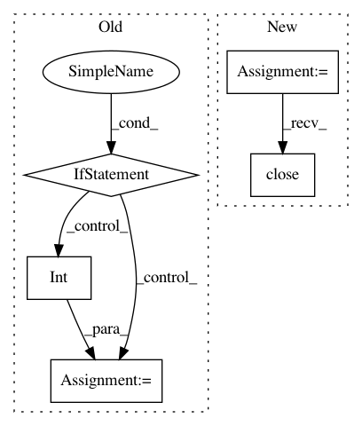

acc6553f80d17469bedfdcdab2ea676478a49d9d,tools/effmpeg.py,Effmpeg,get_fps,#Any#Any#,357
Before Change
ffp = FFprobe(inputs=_inputs)
_fps = ffp.run(stdout=subprocess.PIPE)[0].decode("utf-8")
_fps = _fps.strip()
if "/" in _fps:
_fps = _fps.split("/")
_fps = str(round(int(_fps[0])/int(_fps[1]), 2))
if print_:
logger.info("Video fps: %s", _fps)
logger.debug(_fps)
return _fps
After Change
logger.debug("input_: %s, print_: %s, kwargs: %s", input_, print_, kwargs)
input_ = input_ if isinstance(input_, str) else input_.path
logger.debug("input: %s", input_)
reader = imageio.get_reader(input_)
_fps = reader.get_meta_data()["fps"]
logger.debug(_fps)
reader.close()
if print_:
logger.info("Video fps: %s", _fps)
return _fps
In pattern: SUPERPATTERN
Frequency: 3
Non-data size: 5
Instances
Project Name: deepfakes/faceswap
Commit Name: acc6553f80d17469bedfdcdab2ea676478a49d9d
Time: 2019-07-04
Author: 36920800+torzdf@users.noreply.github.com
File Name: tools/effmpeg.py
Class Name: Effmpeg
Method Name: get_fps
Project Name: dPys/PyNets
Commit Name: 4a432c5225262f26517776aa865c4c8428d808ad
Time: 2020-07-22
Author: dpisner@utexas.edu
File Name: pynets/plotting/plot_graphs.py
Class Name:
Method Name: plot_community_conn_mat
Project Name: dPys/PyNets
Commit Name: 4a432c5225262f26517776aa865c4c8428d808ad
Time: 2020-07-22
Author: dpisner@utexas.edu
File Name: pynets/plotting/plot_graphs.py
Class Name:
Method Name: plot_conn_mat